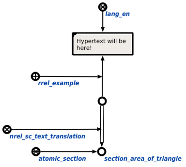

Команда поиска трансляции гипертекста предназначена для нахождения гипертекстовой трансляции для указанного корневого элемента scn-статьи. Единcтвенным аргументом команды является корневой элемент scn-статьи, имеющий гипертекстовую трансляцию. Результатом выполнения команды является отображение гипертекстовой трансляции для указанного корневого элемента scn-статьи. В ответ для атомарного раздела "Раздел. Площадь треугольника" будут добавлены все элементы, указанные в следующем фрагменте БЗ:
